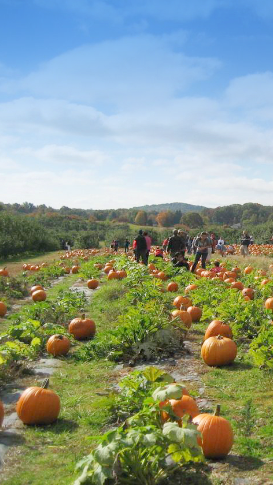

{% extends 'app.nunjucks' %}
{% block title %}蔬游-好友农场{% endblock %}
{% block content %}

<div class="headbar-sticky">
  <div class="aiui-headbar aiui-headbar__fixed aiui-headbar__transparent">
    <div class="aiui-headbar__item">
      <a href="javascript:history.back();" class="icon-return"></a>
    </div>
    <h3 class="aiui-headbar__title">智能摄像头</h3>
  </div>
</div>
<div class="see-video">
  
</div>
<div class="remote">
  <div class="top-btns">
    <button type="button" class="top-btn"><i class="icon-video"></i></button>
    <button type="button" class="top-btn"><i class="icon-telephone-outline"></i></button>
    <button type="button" class="top-btn"><i class="icon-camera-outline"></i></button>
  </div>
  <div class="remote-control">
    
    <button type="button" class="remote-control__btn -top"></button>
    <button type="button" class="remote-control__btn -bottom"></button>
    <button type="button" class="remote-control__btn -left"></button>
    <button type="button" class="remote-control__btn -right"></button>
  </div>

</div>
{% endblock %} {% block footer %}
<script>
  //头部导航固定
  $(".headbar-sticky").sticky({ topSpacing: 0 });
</script>
{% endblock %}